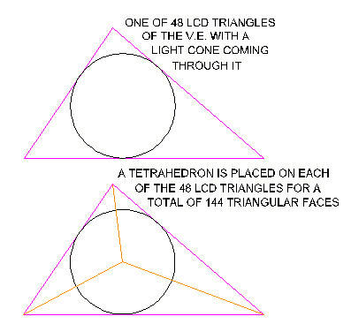
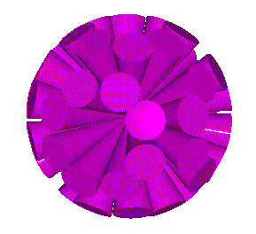
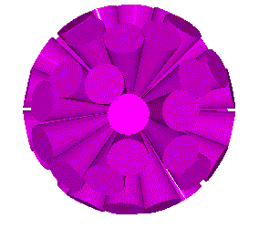
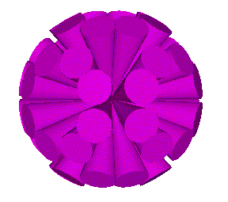
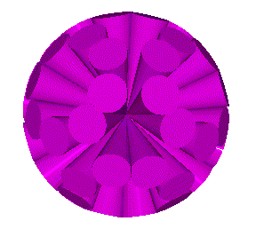
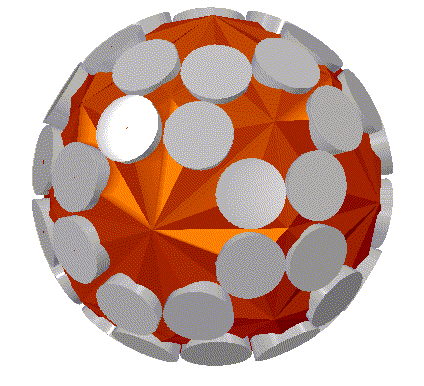
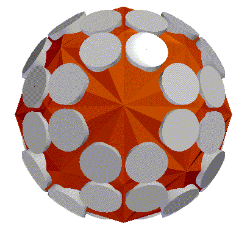

My interpretation of what Lynnclaire has told me is that she saw a polyhedron inside another polyhedron. The inner most polyhedron had 48 cones of light coming out of it at 48 vertices. This polyhedron had 144 triangular faces. The outer polyhedron had 120 triangular faces.
From my work on R. Buckminster Fuller's geometry, I was able to point out that there are 48 LCD (Lowest Common Denominator) triangles covering the entire sphere and defined by the great circles of symmetry of the V.E. (cuboctahedron).
Here is an illustration of the spherical VE (cuboctahedron). The dark blue lines show one of the triangular and square faces of the VE. The spherical triangle in red is one of 48 LCD spherical triangles. The light blue lines show the other LCD spherical triangles.

So, we place a light cone in each of the 48 LCD triangles.
Next, we add a tetrahedron (not regular) onto each of the 48 LCD triangles. This results in 3 triangular faces for every LCD triangle. This gives 3 x 48 = 144 triangles for the resulting polyhedron.
Here are some illustration showing 48 "cones of light."
   So, the resulting "inner" polyhedron has 144 triangular faces, 74 vertices (48 of the vertices have light cones coming out of them), and 216 edges.
Here are some images of the 144 faced polyhedron.


Here are some images of the 48 cones coming through 48 vertices of the 144 faced polyhedron.
 Click here to view and print template drawings from which you can assemble the 48 LCD polyhedron and the 144 polyhedron.
Usage Note: My work is copyrighted. You may use my work but you may not include my work, or parts of it, in any for-profit project without my consent.